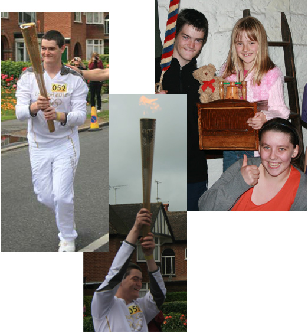
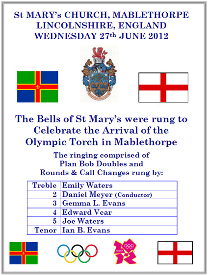
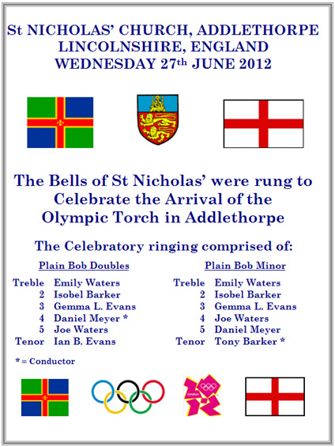
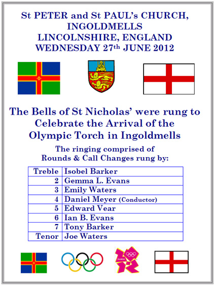
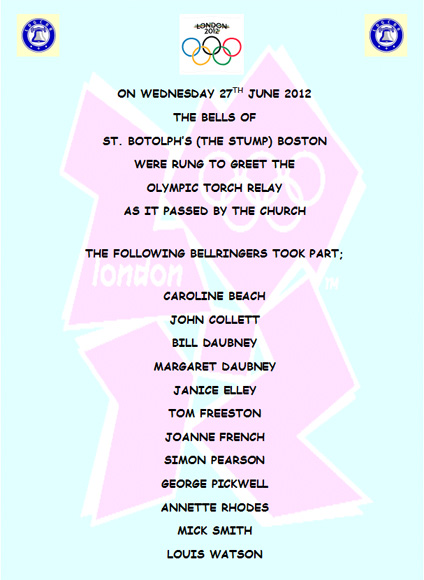
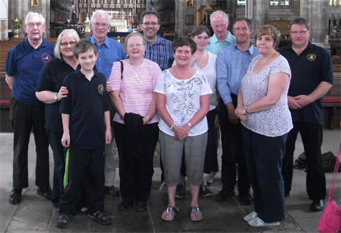
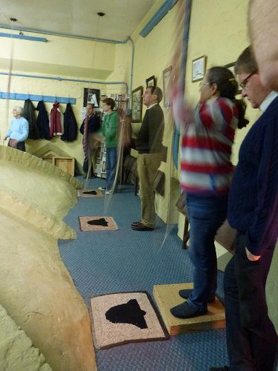
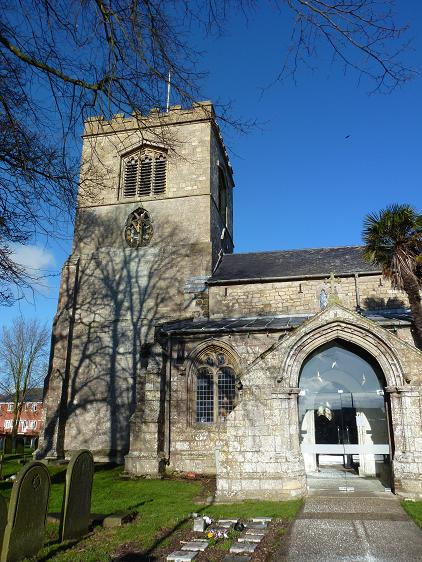

2012 News

Eastern Branch Member Carries Olympic Torch

Thomas Evans proudly bearing the Olympic Torch, and with his sisters at St Wilfrid's, Alford.
One of St Wilfrid's young bell ringers, Thomas Evans (age 17) was selected as a Torch Bearer for part of the Olympic flame's journey through Lincolnshire this summer. He carried the torch in Holbeach on Wednesday 4th July, for part of its journey around the country to the Olympic Games in London this summer.
Thomas was nominated by a couple in Lincoln who had become aware of his community fund raising efforts over a number of years. Thomas' recent fund raising efforts have included a sports challenge to raise funds for the Alzheimer's Society and raising money as part of his Duke of Edinburgh Award for St Mary's church Harrington so they can increase the number of bells from three to five. In the past, when Thomas was thirteen, he was runner-up in the Damian Trust Lincolnshire Young Achiever Award for his fund raising including organising a sponsored bell ringing and concert event for Red Nose Day.
Thomas has been a member of the bell ringing team at Alford since 2006 and he is currently an A-level student at Queen Elizabeth's Grammar School.
Eastern Branch Towers Support Olympic Torch Relay





Olympic Ringers at Boston Stump
Eastern Branch Diamond Jubilee Ringing
To celebrate the Queen’s diamond Jubilee members and friends of the Eastern branch took a mini tour of 3 towers in the branch on the 5th June, heading towards the Guild celebrations at Wragby.
The first tower on the route was All Saints, Croft, near Skegness, at 11.30am. About 15 ringers got the day off to a good start.
After ringing the bells down at Croft, we moved a couple of miles nearer to Wragby to Ss Peter and Paul, Burgh le Marsh. There more ringers joined us and a variety of major and triples methods and call changes were rung, to suit all standards of ringer.
The third and final tower of the day was St Peter, Gunby. This is in the grounds of Gunby hall with 5 bells. The hall was open to visitors on the day, meaning we had a few spectators watching and listening! Again a variety doubles methods were rung before some moved on to finish the day at Wragby.
Jo French
Ringing for St George at St Andrew's

On Monday 23rd April 2012 a quarter peal was rung at Butterwick for St George's day by; (pictured above, left to right) Aubrey Pepper, John Collett (C), David Bennett, Tom Palmer, Joanne French and Tom Freeston. It was also celebrating Tom Palmer's 88th birthday.
For details please see 2012 quarter peal page.
Eastern Branch Meeting at Frampton - 14th April 2012
Around twenty branch members travelled to St Mary's, Frampton on Saturday 14th April for the evening practice meeting. Ringing ranged from Rounds and Called Changes to some Surprise Minor and spliced Plain Minor methods, giving everybody something to think about!
Ian, Robert and Emily did a great job with the tea and biscuits, and a collection for the bell repair fund raised £18.
Mark Hibbard
Eastern Branch Practice, Boston Stump, 3rd March 2012

The practice at Boston Stump on 3rd March was well supported by Eastern Branch members, visitors from other branches bringing the attendance to around thirty ringers. In a brief meeting before ringing commenced (a welcome opportunity to recover from the climb!) Delia Rutt from Butterwick was elected as a new member, proposed by John Collett and seconded by Val Wild.
A range of methods were rung, from Plain Bob Doubles to Stedman Caters, with called changes also on up to ten bells there was ample opportunity for all to practice something, and for many a chance to experience more than their usual six or eight bells.
A collection raised £20 for the bell repair fund.
Mark Hibbard
Eastern Branch AGM at Ingoldmells, Saturday 28th January 2012

The 2012 Eastern Branch AGM was held at Ingoldmells on Saturday 28th January. We were welcomed by Tony Barker at 11 am, when the day started with ringing for all abilities, led by Caitlin Meyer.
The day was well attended, with over 30 ringers present at the service which followed. The service was conducted by Reverend Frances Jeffries, herself a former ringer. The two readings were given by President Tom Freeston and Guild Web Master Jonathon Clark. The three hymns included the ringers' hymn, 'Now thank we all our God' and 'Set them nobly in the steeple, let our bells be rung on high.'
Following the service, we moved over the road to the church hall where Isabelle Barker and team had been busy preparing a delicious lunch of shepherds pie and a choice of desserts. The Guild 100 club was drawn, the first prize went to organiser Dot Mason who denied any 'fix', the second prize to Margaret Parker.
At the AGM all posts were filled, although a volunteer is still being sought to arrange the October coach outing. Julia Limage was thanked for her work as secretary and presented with a bouquet of flowers. Simon Pearson from Freiston is the new secretary. A new post was created of Vice President, and John Collett was elected. Kate Meyer and Joanne French became the new Ringing Master and assistant. £62 was raised by the raffle in aid of the branch bell repair fund. The meeting closed at 3.30, when some headed home in the daylight and others returned to the church to end the day with more ringing until 5 o'clock.
Joanne French